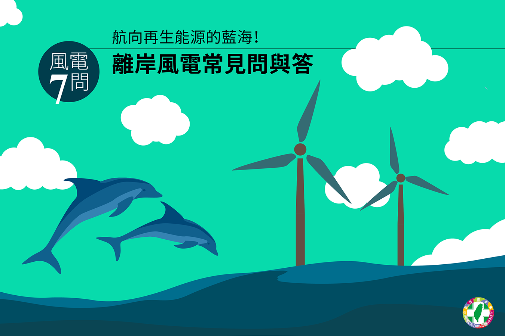
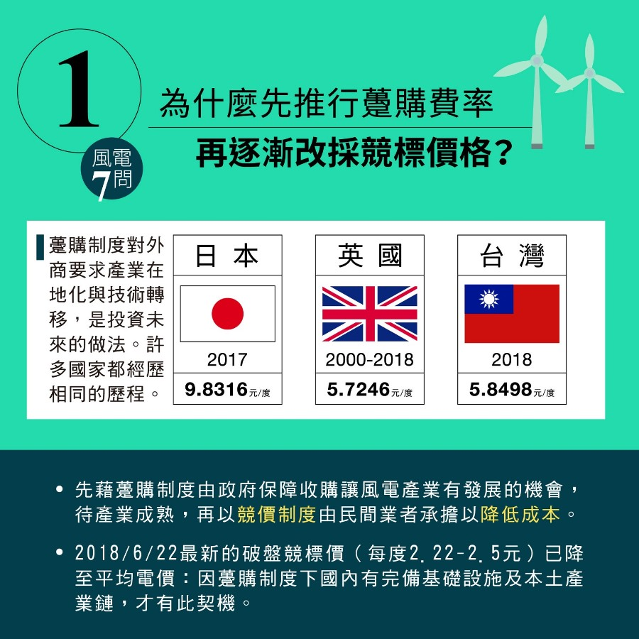
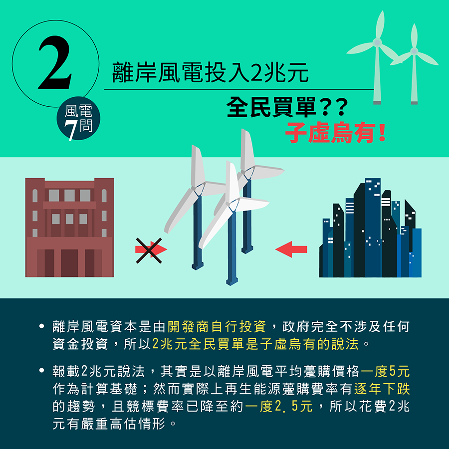
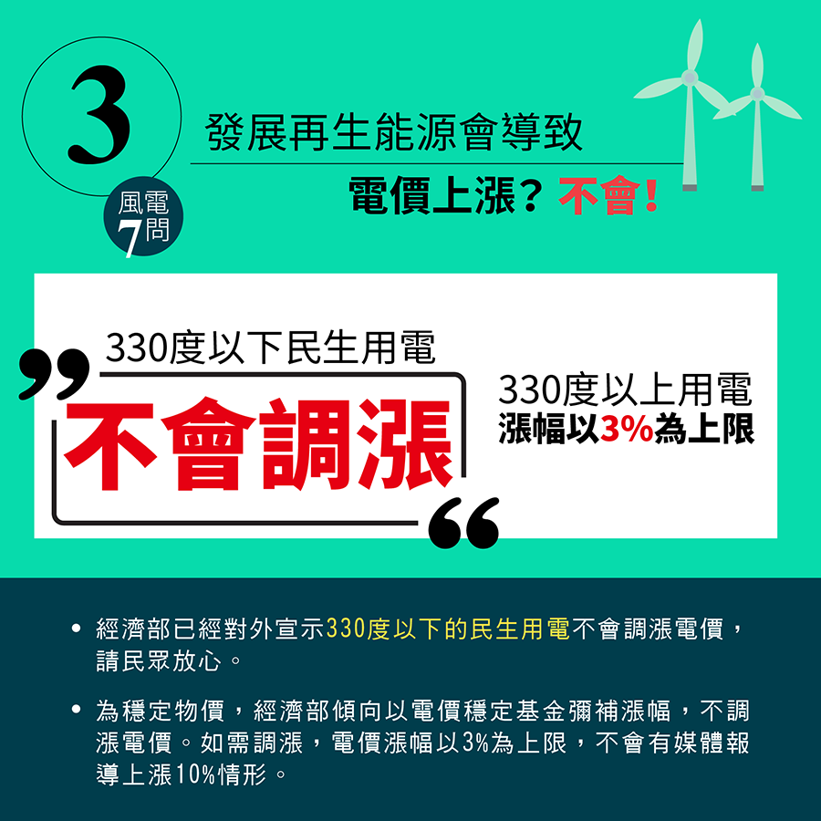
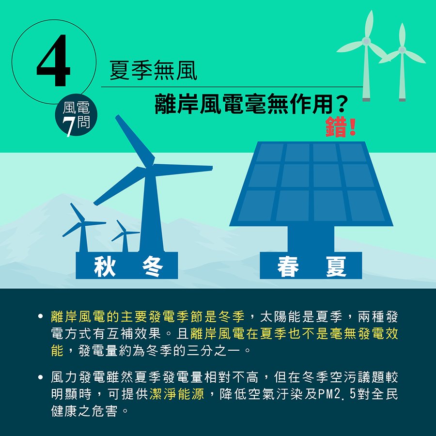
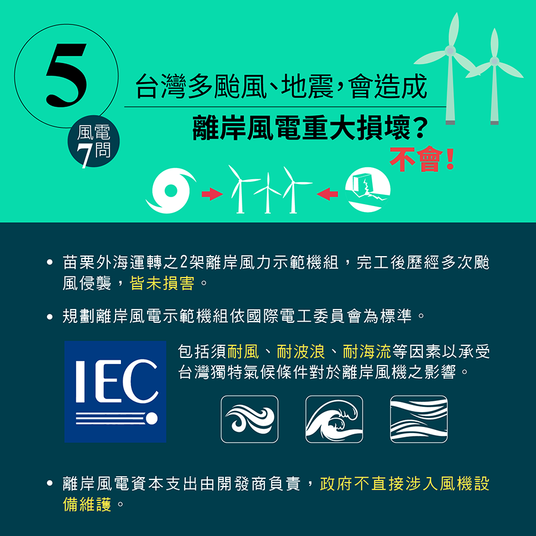
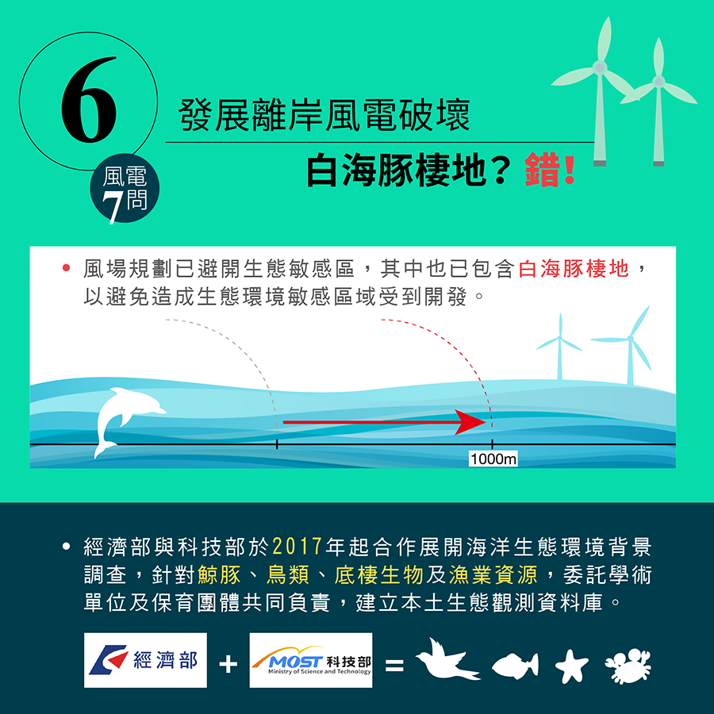
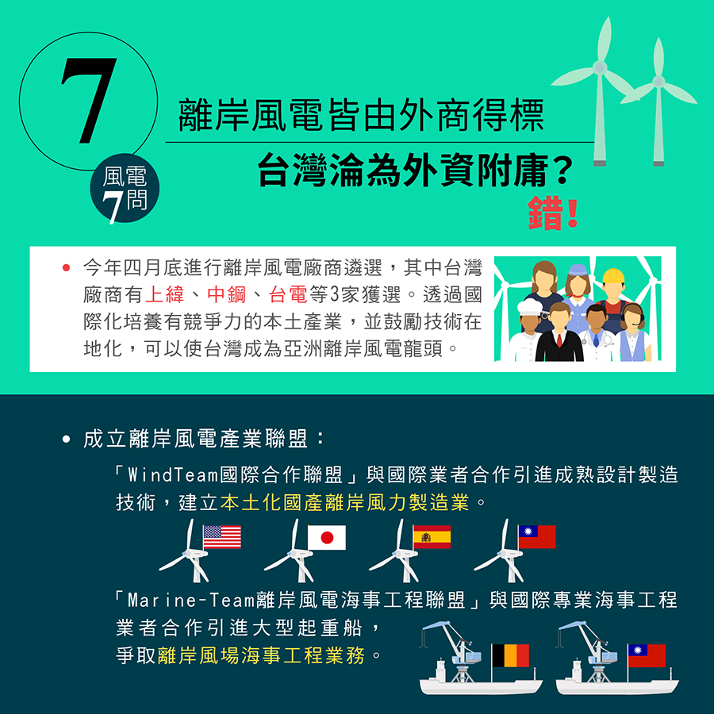

2018-07-07
【謠止步】航向再生能源的藍海！離岸風電常見問與答
〞台灣獨特的地理優勢，使得離岸風電扮演關鍵的角色。〞
台灣的地理條件得天獨厚，擁有絕佳的環境，適合發展離岸風力發電。根據國際工程顧問公司4C Offshore研究，全世界最適合發展離岸風電的20個場址中，台灣海峽就佔了16處。
為了維護台灣的環境並且善盡對下一代的責任，發展再生能源是一條必須堅持的道路。其中，台灣獨特的地理優勢，使得離岸風電扮演關鍵的角色。
關於離岸風電，您還有哪些疑問？躉購費率和競標價錢有什麼不同？政府有哪些措施減少對海洋生態的衝擊？離岸風電產業，將如何吸引國際企業投資，發展綠能產業？
讓我們一起解答疑問，航向再生能源的藍海！







